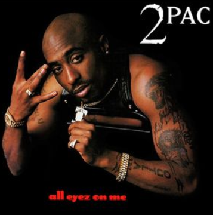

Tupac Amaru Shakur, born on June 16, 1971, in East Harlem, New York, is widely regarded as one of the most influential rappers in music history. Growing up in a challenging environment marked by poverty, violence, and social inequality, Tupac developed a deep awareness of the struggles faced by African Americans, which he expressed through his music. He began his career as a rapper in the late 1980s and rose to fame in the early 1990s with albums like 2Pacalypse Now and Strictly 4 My N.I.G.G.A.Z. His work was known for its raw honesty, combining personal experiences with social commentary. Songs such as “Brenda's Got a Baby” and “Keep Ya Head Up” tackled issues like teen pregnancy, poverty, and the mistreatment of women, showing that he was more than just a performer—he was a storyteller and activist.
Tupac became a central figure in the East Coast-West Coast rap rivalry, particularly with The Notorious B.I.G., which brought both media attention and controversy. Despite his fame, he remained outspoken about injustice, inequality, and the hardships of life in urban America. On September 13, 1996, Tupac was tragically killed in a drive-by shooting in Las Vegas at the age of 25, a crime that remains officially unsolved. Even after his death, Tupac's music, poetry, and films continue to influence artists and fans worldwide. His legacy extends beyond hip-hop, as he is remembered as a voice for social change, a poet of the streets, and a symbol of resilience and creativity in the face of adversity. Tupac Shakur's impact on music and culture ensures that his name will never be forgotten.